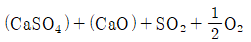
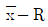
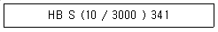

제강기능장 (2012-07-22 기출문제)
1과목: 임의 구분
1. 더미 바(Dummy bar)나 주괴를 잡아당기기 위한 룰은?
- 아이들롤(idle roll)
- 풋트롤(foot roll)
- 핀치롤(pinch roll)
- 가이드롤(guide roll)
(정답률: 89%)

2. 연속주조작업에서 Al 킬드강에 나타나는 노즐 막힘 사고를 방지하기 위하여 불활성 가스피막으로 알루미나의 석출을 방지하는 방법이 아닌 것은?
- 슬라이딩 노즐(sliding nozzle)
- 포러스 노즐(porous nozzle)
- 가스 슬리브 노즐(gas sleeve nozzle)
- 가스 취임 스토퍼(gas bubbling stopper)
(정답률: 73%)
3. 더미 바(Dummy bar)의 설명으로 틀린 것은?
- 길이는 가이드 롤까지 이른다.
- 더미 바 헤드는 주형 단면보다 약간 작다.
- 주조를 처음 시작할 때 주형의 밑을 막는다.
- 더미 바의 윗 부분은 주괴와 잘 결합하도록 볼트모양이나 레일 모양으로 되어 있다.
(정답률: 91%)
4. 강 제조시에 탈산제를 첨가하지 않거나 소량 첨가해서 주입하므로 응고 중에 CO가스가 발생하여 강괴 내에 많은 기포를 함유하고 강괴 두부에 수축관이 없어 강괴 전부를 사용하는 강은?
- 림드강
- 킬드강
- 캡트강
- 세미킬드강
(정답률: 78%)
5. 전로 조업시 철광석의 역할은?
- 유동성을 좋게 한다.
- 탈황반응을 촉진한다.
- 산화반응의 산소공급원이 된다.
- 강중의 수소를 흡수한다.
(정답률: 90%)
6. ESR 용해법에서 슬래그의 산소 포텐셜을 낮게 하기위한 방법을 설명한 것 중 틀린 것은?
- 산화성 분위기 중에서 용해한다.
- 화학적으로 안정한 슬래그를 사용한다.
- 용해 중에 Al 등을 가하여 용융 슬래그의 탈산을 도모한다.
- 금속의 종류에 따라 다르나 충분히 탈산된 전극재를 사용한다.
(정답률: 59%)
7. 강의 탈산이 약할 때 표피 바로 아래에 가장 많이 발생하는 결함은?
- 균열
- 기포
- 벌징
- 탕경
(정답률: 81%)
8. 용강이나 용재가 노 밖으로 비산하지 않고 노구 부근에 도넛형으로 쌓이는 현상은?
- 스피팅(spitting)
- 덤핑(dumping)
- 슬로핑(slopping)
- 베렌(bäen)
(정답률: 90%)
9. 진공탈가스법의 처리 효과가 아닌 것은?
- 내화물 수명연장
- 유해원소의 증발제거
- 비금속재개물의 저감
- 온도 및 성분의 균일화
(정답률: 78%)
10. LD전로에서 탈인이 잘 진행되기 위한 조건이 아닌 것은?
- 강재의 산화력이 클 것
- 강재 중에 P2O6가 많을 것
- 강재의 염기도가 높을 것
- 강재의 유동성이 좋을 것
(정답률: 88%)
11. 전로조업은 취련제어 프로세스 컴퓨터 및 주변계측 기술의 진보에 따라 Static, Semi-Dynamic, Dynamic Control방식으로 발전하고 있다. 다음 중 Dynamic Control 방식이 아닌 것은?
- 종점 제어법
- 서브랜스법
- 폐가스 분석법
- 노체중량 계측법
(정답률: 80%)
12. 탈산제의 조건으로 틀린 것은?
- 탈산제의 비중이 클 것
- 탈산생성물의 부상속도가 클 것
- 산소와의 친화력이 Fe보다 클 것
- 탈산제가 용강 중에 급속히 용해될 것
(정답률: 73%)
13. 염기성 슬래그의 특징으로 틀린 것은?
- 강한 산화성을 갖는다.
- 탈 P, 탈 S 에 유리하다.
- 슬래그 중에 존재하는 Fe0 는 유리상태에 있다고 할 수 있다.
- 염기성 슬래그의 유동성은 염기성 물질(Ca0)의 증가와 함께 개선된다.
(정답률: 58%)
14. 고주파 유도로의 용해 조업에 대한 설명으로 틀린 것은?
- 탈탄, 탈인, 탈황이 우수하다.
- 산화성 합금원소의 실수율이 높다.
- 고합금 일수록 용해에 유리하다.
- 로내 용강의 성분, 온도의 제어가 쉽다.
(정답률: 76%)
15. 전기로 자동제어 방법 중 공장 전체 전력이 일정한 제한량을 넘지 않도록 전력을 감시하고, 각 노(壚)에 일정한 전력을 분배하고 제어하는 것은?
- Eddy 제어
- Demand 제어
- Linear 제어
- Starting 제어
(정답률: 82%)
16. 다음 중 용강의 점성을 증가시키는 원소는?
- Mn
- Si
- W
- Al
(정답률: 70%)
17. 상주초기에 용강의 비말(splash)에 의한 각의 형성으로 강괴 하부에 생기는 결함은?
- 탕주름
- 이중표피
- 해면두부
- 개재물 혼입
(정답률: 83%)
18. 아크식 전기로에서 환원철을 사용한 경우에 대한 설명으로 틀린 것은?
- 맥성분이 많다.
- 제강 시간이 단축된다.
- 철분을 회수하기 좋다.
- 다량의 산화칼슘이 필요하다.
(정답률: 58%)
19. 전로조업에서 사용되는 부원료 중 조재제와 냉각제로 모두 사용되는 재료는?
- 형석
- 석회석
- 철광석
- 생석회
(정답률: 75%)
20. 직류(DC)식 전기로에 대한 설명으로 옳은 것은?
- 전원 용량의 확대로 생산성이 향상된다.
- 전극 수의 증가로 전극 소모가 많아 전극 원단위가 증가한다.
- 편열에 의한 고열 부위가 발생하여 내화물 원단위가 증가한다.
- 용해 특성은 향상되나 전원 전압의 변동이 심하여 전력 사용량이 증가한다.
(정답률: 63%)
2과목: 임의 구분
21. 전로 취련 중 발생하는 슬로핑(slopping)을 억제하기 위한 방안으로 적당하지 않은 것은?
- 철광석 등의 부원료 투입량을 최소화 한다.
- 산소유량을 증대하고 랜스의 높이를 상승시킨다.
- 슬래그 진정제를 투입하여 슬래그 포밍 현상을 줄인다.
- 용선중의 Si함량을 낮게 관리하여 슬래그 발생량을 최대한 줄인다.
(정답률: 81%)
22. 전로 슬래그의 주요 성분이 아닌 것은?
- CaO
- SiO2
- ZnS
- Fe2O3
(정답률: 82%)
23. UHP 조업의 설명 중 틀린 것은?
- 생산성을 높인다.
- 전력 원단위를 낮춘다.
- 단위시간당의 투입전력량을 증가시켜 용해 및 승열 시간을 단축한다.
- 대전압, 소전류의 저력율(低力率)에 의한 굵고 긴아크로 조업한다.
(정답률: 84%)
24. 용강 중에 생성된 핵의 성장 기구로 다음 중 가장 크게 기여하는 것은?
- 확산에 의한 성장
- Brown 운동에 의한 충돌에 기인하는 응집성장
- 용강의 교반에 의한 충돌에 기인하는 응집성장
- 부상속도이 차에 의한 충돌에 기인하는 응집성장
(정답률: 64%)
25. 연속주조에서 주조된 슬래브의 다크라인(Dark Line) 흠을 방지하기 위한 방법이 아닌 것은?
- 주형 냉각수 증대
- 주편손질(Scarfing) 실시
- 탈산(성) 개재물 발생억제
- 연주공정에서 용강재산화 방지
(정답률: 79%)
26. 전기로 조업에서 일반적인 환원기 작업의 순서로 옳은 것은?
- 제재 직후의 가탄 → 초기의 합금첨가에 의한 탈산 → 성분 조정 및 온도 조정 → 환원강재에 의한 탈산
- 제재 직후의 가탄 → 초기의 합금첨가에 의한 탈산 → 환원강재에 의한 탈산 → 성분 조정 및 온도 조정
- 초기의 합금첨가에 의한 탈산 → 성분 조정 및 온도 조정 → 환원강재에 의한 탈산 → 성분 조정 및 온도 조정
- 초기의 합금첨가에 의한 탈산 → 환원강재에 의한 탈산 → 제재 직후의 가탄 → 성분 조정 및 온도 조정
(정답률: 71%)
27. 전기로 제강 조업시 강욕 중에 산소를 취입하였을 때 산화 제거 순서를 옳게 나열한 것은?
- Mn → Si → Cr → C
- Cr → C → Si → Mn
- C → Mn → Cr → Si
- Si → Mn → Cr → C
(정답률: 84%)
28. 스테인리스강 진공탈탄법으로 적합한 것은?
- CAS 법
- LDS 법
- SAB 법
- VOD 법
(정답률: 89%)
29. LD-AC법에 대한 설명 중 틀린 것은?
- 넓은 성분범위의 용선을 사용할 수 있어 고로 원료에 제한이 적다.
- 고인선의 취련은 제강능률이 매우 높아 보통조업법보다 생산성이 높다.
- 조재제인 분CaO를 취련용 산소와 함께 강욕면에 취입하는 취련방식이다.
- 반응성이 좋은 강재가 급속히 형성되어 탈인 및 탈황이 효과적으로 진행된다.
(정답률: 62%)
30. 전로에서 취련 전체 기간 동안 강재에 의한 탈황을 나타내는 반응식으로 옳은 것은?
- [S] + 2[0] = SO2+1/2O2

- (CaO) + [FeS] = (CaS) + (FeO)
- (CaSO4) + 2(FeS) = (CaO ㆍ Fe2O3) + SO2
(정답률: 87%)
31. 레이들 정련의 효과가 아닌 것은?
- 대기 용제법에 비해 Cr 회수율이 크다.
- 전기로 등에서 환원기를 생략할 수 있어 생산성이 향상된다.
- VOD법, RH-OB법 등을 채용하여 전기로의 내화물 수명이 현저하게 증가 된다.
- 전기로와 VOD법을 조합하면 전기로에서 완전탈탄후 VOD에서 환원정련을 실시하여 생산성을 향상시킬수 있다.
(정답률: 57%)
32. 노의 탈황법에서 탈황제를 용선표면에 첨가하여 놓고 용선 중에 가스를 취입하여 기포의 상승에 따라 용선의 교반 운동을 이용하는 방법은?
- 포로스 플러그법
- 요동 레이들법
- 기계 교반법
- 치주법
(정답률: 77%)
33. 전로 노내 주요 반응에서 잘 일어나지 않는 반응은?
- 탈탄(C)
- 탈수소(H)
- 탈규소(Si)
- 탈망간(Mn)
(정답률: 77%)
34. 노외정련 설비의 하나인 LF(Ladle Furnace) 설비의 주요 기능에 대한 설명으로 틀린 것은?
- 성분을 조정한다.
- 용강을 탈탄한다.
- 용강의 온도를 높인다.
- 서브머지드 아크 정련을 한다.
(정답률: 69%)
35. 주형의 진동으로 인하여 주편표면에 횡방향으로 줄무늬가 남게 되는 결함은?
- Lamination
- Blow hole
- Non-metallic
- Oscillation mark
(정답률: 89%)
36. 복합 취련법의 특징을 설명한 것 중 틀린 것은?
- 노체 내화재의 수명이 길다.
- 취련시간이 단축되고 용강의 실수율이 높다.
- 강욕 중의 C, O의 반응이 없어 극저탄소강 등 청정간제조에 유리하다.
- 강욕의 교반이 균일하여 위치에 따른 성분과 온도의 편차가 없다.
(정답률: 66%)
37. 전로의 노체 수명과 관련한 설명 중 옳은 것은?
- 산소의 사용량이 많으면 노체 수명은 감소한다.
- 휴지시간을 감소시키면 노체 수명은 감소한다.
- 용선 중에 Si 함량이 증가하면 노체 수명은 증가한다.
- 일반적으로 취련 종점에 있어 강욕 중의 C 함량이 낮게된 만큼 노체 수명은 증가한다.
(정답률: 70%)
38. 만곡형 연주기의 특징을 설명한 것 중 틀린 것은?
- 설비 높이가 수직형의 1/2 정도이다.
- 용강정압이 작아 롤 간의 벌징량이 적다.
- 주편 인사이드부에 개재물이 편재하는 경향이 있다.
- 주형에서 가까운 부분에 교정점이 존재하지 않아 내부 크랙이 발생이 없다.
(정답률: 81%)
39. LD 전로의 노내 반응에 대한 설명으로 틀린 것은?
- 용강, 슬래그 교반이 심하고 탈인과 탈탄반응이 동시에 일어나지 않는다.
- 강력한 용강교반에 의하여 용강 중 가스함유량이 저하한다.
- 공급 산소의 반응 효율이 높으며 탈탄반응이 매우 빨라 정련시간이 짧다.
- 취련말기에 용강 탄소농도가 저하하며 탈탄속도도 저하하기 때문에 목표 탄소농도를 맞추기 용이하다.
(정답률: 75%)
40. 전로용 내화물로써 요구되는 성질이 아닌 것은?
- 장입물의 충격에 대한 내충격성이 좋아야 한다.
- 급격한 온도변화에 대한 스폴리성이 좋아야 한다.
- 염기성 슬래그에 대한 화학적 내식성이 좋아야 한다.
- 용강이나 용재의 교반에 대한 내마모성이 좋아야 한다.
(정답률: 86%)
3과목: 임의 구분
41. 연속주조설비 중 레이들(Ladle)과 주형의 중간에서 용강을 받아 주형으로 분배하는 것은?
- 스토퍼
- 노즐
- 턴디시
- 몰드
(정답률: 91%)
42. 산소전로강의 특징이 아닌 것은?
- 강 중에 N, O, H 등 함유가스량이 적다.
- 극저탄소강의 제조에 특히 적합하다.
- 고철사용량이 많아 Ni, Cr, Cu, Sn 등의 trampelement가 많다.
- P, S 함량이 낮은 강을 얻기 위해 더블 슬래그법등 특수한 조업방법이 필요하다.
(정답률: 76%)
43. 축의 완성지름, 철사의 인장강도, 아스피린 순도와 같은 데이터를 관리하는 가장 대표적인 관리도는?
- c 관리도
- nP 관리도
- u 관리도

관리도
(정답률: 67%)
44. 로트의 크기가 시료의 크기에 비해 10배 이상 클때, 시료의 크기와 합격판정개수를 일정하게 하고 로트의 크기를 증가시킬 경우 검사특성곡선의 모양 변화에 대한 설명으로 가장 적절한 것은?
- 무한대로 커진다.
- 별로 영향을 미치지 않는다.
- 샘플링 검사의 판별 능력이 매우 좋아진다.
- 검사특성곡선의 기울기 경사가 급해진다.
(정답률: 78%)
45. 작업시간 측정방법 중 직접측정법은?
- PTS법
- 경험견적법
- 표준자료법
- 스톱워치법
(정답률: 81%)
46. 준비작업시간 100분, 개당 정미작업시간 15분, 로트 크기 20일 때 1개당 소요작업시간은 얼마인가? (단, 여유시간은 없다고 가정한다.)
- 15분
- 20분
- 35분
- 45분
(정답률: 68%)
47. 소비자가 요구하는 품질로서 설계와 판매정책에 반영되는 품질을 의미하는 것은?
- 시장품질
- 설계품질
- 제조품질
- 규격품질
(정답률: 79%)
48. 다음 중 샘플링 검사보다 전수검사를 실시하는 것이 유리한 경우는?
- 검사항목이 많은 경우
- 파괴검사를 해야 하는 경우
- 품질특성치가 치명적인 결점을 포함하는 경우
- 다수 다량의 것으로 어느 정도 부적합품이 섞여도 괜찮을 경우
(정답률: 87%)
49. 다음 중 분말야금에 대한 설명으로 틀린 것은?
- 고용도의 제한이 없기 때문에 다양한 합금설계가 가능하다.
- 생산할 수 있는 제품의 크기와 형상에는 제한이 없다.
- 최종제품의 형상으로 가공할 수 있어 절삭가공의 생략이 가능하다.
- 용융점이 높은 재료의 경우에도 용융하지 않고 제품을 제조할 수 있다.
(정답률: 72%)
50. 구상화주철의 용해시 생기는 페이딩(fading) 현상과 관련된 내용으로 틀린 것은?
- fading 현상은 구상흑연수를 감소시킨다.
- 용탕의 온도가 높을수록 fading 현상은 빠르다.
- 슬래그를 빨리 제거할수록 fading 현상은 빨라진다.
- 구상흑연 제조시 마그네슘이 과다인 경우 fading 현상이 조기에 일어난다.
(정답률: 62%)
51. 헤드필더(Heafield) 강에 대한 설명으로 틀린 것은?
- 마텐자이트 조직을 가진 강이다.
- 고온에서 서냉하면 결정립계에 M3C가 석출한다.
- 고온에서 서냉하면 오스테나이트가 마텐자이트로 변태한다.
- 열전도성이 나쁘고, 팽창계수도 커서 열변형을 일으킨다.
(정답률: 60%)
52. 브리넬 경도가 [보기]와 같이 표현되었을 때 이에 따른 설명으로 틀린 것은?

- HB : 압입자의 종류
- 10 : 압입자의 직경(mm)
- 3000 : 시험 하중(kgf)
- 341 : 브리넬 경도값
(정답률: 74%)
53. 다음 중 Ni - Fe 합금이 아닌 것은?
- 엘렉트론(Elektron)
- 니칼로이(Nicalloy)
- 퍼멀로이(Permalloy)
- 플래티나이트(Platinite)
(정답률: 70%)
54. 2종 이상의 금속원자가 간단한 원자비로 결합되어 본래의 물질과 전혀 다른 결정격자를 형성한 물질을 무엇이라 하는가?
- 고용체
- 금속간 화합물
- 편석
- 불규칙 변태
(정답률: 87%)
55. 7:3 황동에 Fe 2% 와 소량의 Sn, Al을 첨가한 합금은?
- German Silver
- Muntz Metal
- Tin Bronze
- Durana Metal
(정답률: 73%)
56. 안전교육의 방법 중 토의법을 적용하는 경우가 아닌 것은?
- 수업의 초기 단계에 적용한다.
- 팀워크가 필요로 하는 경우에 적용한다.
- 알고 있는 지식을 심화하기 위해 적용한다.
- 어떠한 자료에 대해 보다 명료한 생각을 갖게 하는 경우에 적용한다.
(정답률: 86%)
57. 다음 중 안전점검의 가장 주된 목적은?
- 위험을 사전에 발견하여 개선하는데 있다.
- 법 및 기준에 적합 여부를 점검하는데 있다.
- 안전사고의 통계율을 점검하는데 있다.
- 장비의 설계를 하기 위함이다.
(정답률: 89%)
58. 다음 중 유연생산시스템(FMS)의 대한 설명으로 틀린 것은?
- 새로운 공작물의 생산 준비 기간이 길어진다.
- 기계의 이용률이 높아지고 임금이 절약된다.
- 생산 기술자가 적극적으로 참여한다.
- 생산 기간의 단축과 납기가 단축된다.
(정답률: 80%)
59. 유압의 제일 기본 원리인 파스칼(Pascal)의 원리에 대한 설명 중 틀린 것은?
- 액체의 압력은 수평으로 작용한다.
- 액체의 압력은 각면에 직각으로 작용한다.
- 각 점의 압력은 모든 방향에 동일하게 작용한다.
- 밀폐된 용기 내 액체에 가해진 압력은 동일한 크기로 각부에 전달된다.
(정답률: 74%)
60. 다음 중 공압장치에 대한 설명으로 틀린 것은?
- 인화의 위험이 없다.
- 에너지 축적이 용이하다.
- 압축공기의 에너지를 쉽게 얻을 수 있다.
- 정확한 위치결정 및 중간정지가 가능하다.
(정답률: 80%)